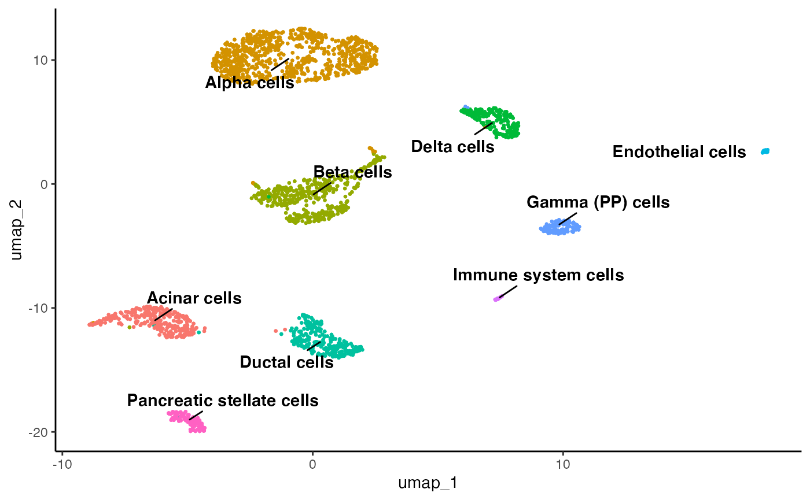

scType.RmdscType is an automated cell type identification method using a panel of markers. Here we should you how to perform this on your IBRAP data and object.
#> Welcome to IBRAP
#> ── Attaching packages ─────────────────────────────────────── tidyverse 1.3.2 ──
#> ✔ ggplot2 3.4.0 ✔ purrr 0.3.5
#> ✔ tibble 3.1.8 ✔ dplyr 1.0.10
#> ✔ tidyr 1.2.1 ✔ stringr 1.5.0
#> ✔ readr 2.1.3 ✔ forcats 0.5.2
#> ── Conflicts ────────────────────────────────────────── tidyverse_conflicts() ──
#> ✖ tidyr::expand() masks Matrix::expand()
#> ✖ dplyr::filter() masks stats::filter()
#> ✖ dplyr::lag() masks stats::lag()
#> ✖ tidyr::pack() masks Matrix::pack()
#> ✖ tidyr::unpack() masks Matrix::unpack()
library(IBRAP)
library(tidyverse)
system('curl -LJO https://raw.githubusercontent.com/connorhknight/IBRAP/main/data/celseq2.rds')
celseq2 <- readRDS('celseq2.rds')
obj <- createIBRAPobject(counts = celseq2$counts, original.project = 'celseq2', meta.data = celseq2$metadata)
obj <- perform.sct(object = obj)
obj <- perform.pca(object = obj, assay = 'SCT')
obj <- perform.nn(object = obj, assay = 'SCT', reduction = 'PCA', dims.use = list(20))
obj <- perform.graph.cluster(object = obj, assay = 'SCT', neighbours = 'PCA_NN')
obj <- perform.umap(object = obj, assay = 'SCT', reduction = 'PCA', dims.use = list(20))We next next need to gather gene sets:
There are a couple of ways to do this: (1) get the gene sets from the escape package or (2) define your own.
obj <- perform.sctype(object = obj, assay = 'SCT', tissue = 'Pancreas', clust.method = 'PCA_NN:LOUVAIN', column = 'res_0.8', slot = 'norm.scaled')
plot.reduced.dim(object = obj, reduction = 'PCA_UMAP', assay = 'SCT', clust.method = 'metadata', column = 'scType_SCT_norm.scaled')